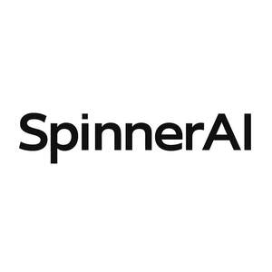

Trade Mark Journal No.2025/048 28 November 2025
UK00004232937 13 July 2025 (9,16,35,36,41,42,43,45)

- Class 9
- Downloadable and recorded computer software, application-programming interfaces (APIs) and data files for artificial-intelligence, machine-learning, deep-learning, generative-AI language models, neural-machine-translation, text-to-image generation and text-to-video generation; downloadable API gateways that connect cloud-computing platforms and third-party AI services; downloadable mobile applications; computer hardware and peripheral devices for AI acceleration, namely processors, edge-computing devices, sensors, cameras; batteries and battery chargers; data-processing apparatus; downloadable electronic publications in the field of artificial intelligence.
- Class 16
- Printed instructional and teaching materials in the field of artificial intelligence; printed manuals, reports, magazines, newsletters, brochures, posters, stickers, business cards, stationery, notebooks, pens, presentation folders.
- Class 35
- Business management and consultancy services relating to the deployment of artificial-intelligence technologies; commercial advisory services in the field of AI platforms and cloud integration; arranging and conducting business conferences, trade shows, exhibitions and networking meet-ups—online and in-person—in the fields of artificial intelligence, machine learning and data science; market-intelligence, competitive benchmarking and commercial due-diligence for AI solutions; employment recruitment and staff placement in the technology sector.
- Class 36
- Financial consultancy relating to investment in artificial-intelligence technologies; venture-capital funding services; crowdfunding services; financial analysis; financial sponsorship of AI research; processing of electronic payments.
- Class 41
- Arranging, organising and hosting offline and online conferences, symposiums, summits, workshops, hackathons, seminars, webinars, boot-camps, meet-ups and community events in the fields of artificial intelligence, generative AI, machine learning, robotics and computer software; education and training services, namely, providing courses, tutorials and certification programmes in the aforesaid fields; publication of electronic books and journals; production of podcasts, audiovisual programmes and livestreams relating to AI; Arranging, organising and hosting online and in-person conferences, symposiums, summits, workshops, hackathons, seminars, webinars, boot camps, meet-ups and community events in the fields of artificial intelligence, generative AI, machine learning, robotics and computer software.
- Class 42
- Software as a Service (SaaS) featuring artificial-intelligence software; Platform as a Service (PaaS) featuring computer-software platforms for deploying AI agents; Integration Platform as a Service (iPaaS) providing a single application-programming interface for connecting to third-party AI and cloud-computing providers; design, development and maintenance of computer hardware, software and mobile applications; cloud-computing services; hosting of digital platforms on the Internet; technological consultancy in the field of artificial intelligence; research and development of new products for others; computer-system integration services; provision of temporary use of non-downloadable online software.
- Class 43
- Provision of food and drink at technology conferences, hackathons, workshops and corporate events; pop-up cafe and catering services branded SpinnerAI; rental or reservation of temporary accommodation and venues for delegates attending AI-related events; all the foregoing provided in person or arranged online.
- Class 45
- Licensing of intellectual-property rights in the field of artificial intelligence; legal-research services, monitoring and compliance advisory services relating to AI regulation, data-privacy and technology standards; domain-name registration and monitoring; online social-networking services for professionals in the AI sector.
Elementally Limited